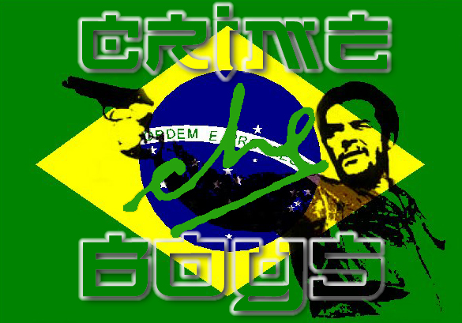
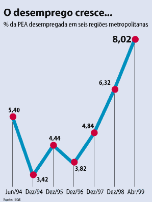
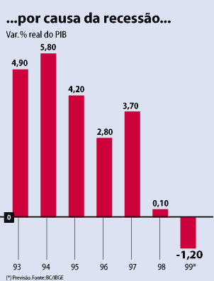
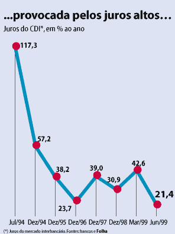
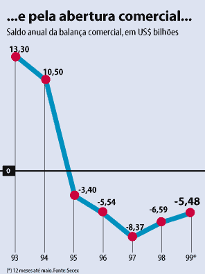
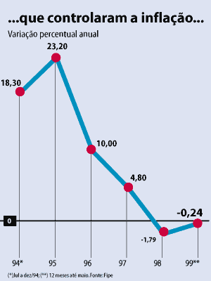
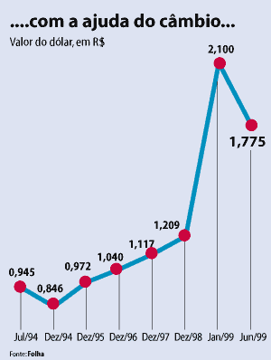
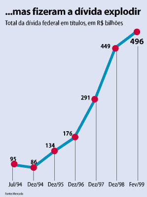

%&#@!
ohhh yeahh... r00ted by Crime Boys!!
!@#&%
___________________________________
O Real nunca conseguiu escapar da armadilha da sobrevalorização do câmbio em 1994. Para manter o real valorizado, o governo colocou os juros entre os maiores do mundo. Com isso, atraiu capitais externos, mas elevou a dívida pública.
Esse era o quadro quando, em meados de 1997, estourou a crise asiática. Com escassez de recursos externos, o governo não teve fôlego para enfrentar a crise internacional, e desistiu de defender a moeda forte, principal característica do plano, em janeiro de 1999.
A maxidesvalorização de janeiro acabou com a âncora cambial, mas não deixou nada no lugar: a inflação só não disparou por causa da recessão. A ova âncora serão as metas de inflação. A idéia é adotar um nível de juros ideal para manter a inflação num dado intervalo, ainda não definido.







___________________________________
Texto e dados extraídos de
www.comunismo.com.br
Precisa falar mais alguma coisa?? Os gráficos mostram tudo!!
Greetz: MaskMaster, Psyh4ck, H0sT_L0sT, VetesGirl, M3L40, GeeFunk, sector, ex-bl0w team (always), ex-inferno.br (valeu por tudo! essa luta era nossa! contnuaremos!), zillion, safemode (visit!), #linuxbr (irc.brasnet.org) e todas pessoas que estão nos apoiando... valeu ae!
Fuckz: essa cambada de filho da puta que manda no senado, congresso e ministérios!
The e-mail of Crime Boys:
Crime Boys is:
Leitão/s0laris